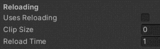
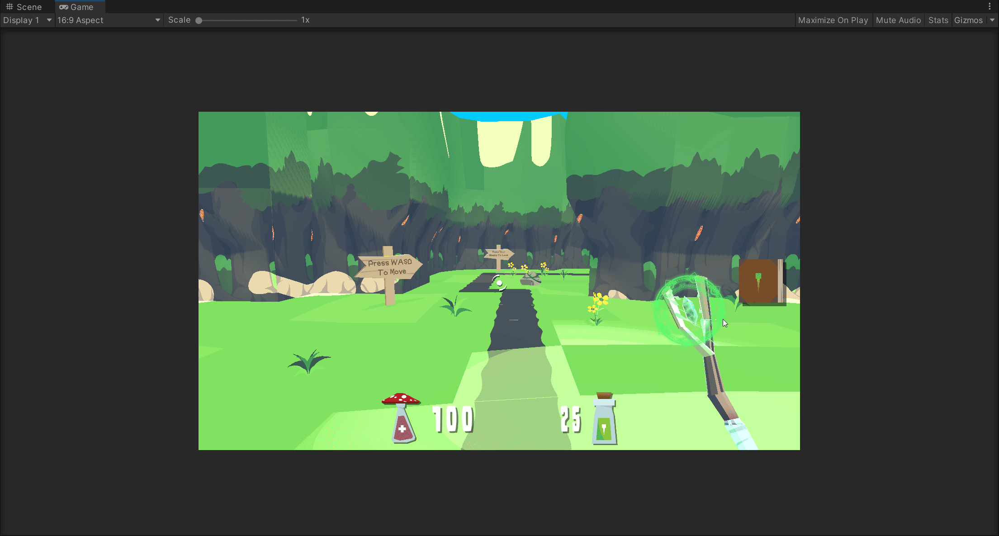
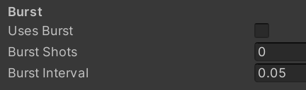
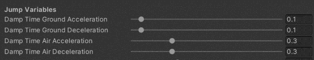
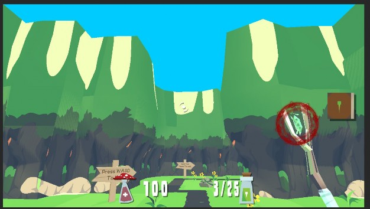

Bri Epstein (bdepst) Dev Blog 2: 10/31/21
Welcome to my second devblog for Project Bloom!

These past two weeks were the pre-alpha 2 sprint, so things have gotten a bit more exciting as I got some more tasks to work on.
The first main time investment was weekly meetings. We’ve had a couple weekly meetings which involved tasks such as playtesting and generating ideas for improvement and discussing plans for the designs and what to work on for the week. For example, talking to each other about trading tasks so that those of us more familiar with a certain system could get tasks that would be easier for us to do. I became pretty familiar with how the weapons work from working on reloading, so I asked to trade for the burst shot functionality as one example. In total, these meetings took up 4 hours these past two weeks. However, I was also able to join in for small periods of time during other meetings such as the leads meeting and for playtesting, so another hour of those makes for 5 hours total.

The first coding task I worked on was continuing my previous work on weapon reloading. I ended up spending around 4 hours polishing this further. There were issues such as cases I hadn’t considered before where the UI would display clip and total ammo counts
incorrectly, or times where reloading wouldn’t work properly. I also tried to make it more intuitive by making the weapon auto-reload if the player were to click or hold down the fire button until the clip ran out of ammo, as opposed to only reloading from pressing the dedicated reload key. I also took into account how design would work with the reloading functionality, so I tried to make it easier for the design team by adding a specific boolean to keep track of whether the weapon used reloading. At first while brainstorming the functionality, I simply checked if the weapon’s clip size was greater than zero, but now the design team should be able to easily test toggling reloading for a weapon without having to awkwardly mess with something less intuitive like setting the clip size to a negative number. Unfortunately, this did make me regret that I didn’t implement it that way to begin with, as there were several places I had to find and fix for this to ensure reloading was always enabled or disabled as requested.


As mentioned before, implementing reloading had made me quite familiar with how the weapon system works. Thus, I wanted the task of working on burst weapons. In shooter games, burst weapons are those that, when fired, shoot multiple bullets in a row automatically. For example, clicking once and shooting three shots in quick succession. The barebones implementation was not very difficult to be honest, as it could essentially be done by repeating the events of a normal spell cast multiple times per click. I gave the design team options for
toggling whether a weapon fires in bursts, how many shots are in a burst, and how long the interval is between each shot in a burst. However, this ended up causing other issues, as lots of the functionality was connected to Unity events, which I hadn’t previously worked with very much. For example, there were issues with odd animations being repeated too quickly or checking whether the active weapon cooldown had finished. I also had to make certain clarifications with the design team to see what possibilities they were looking for specifically.
Additionally, I ran into some problems meshing it with the reload system’s clip vs total ammo counts and using the proper variables for checking whether shooting was possible and decrementing ammo. Another issue that came up was firing a burst when there was less ammo available than there were shots in a burst. This would cause the weapon to get stuck in the “bursting” state, preventing it from any further shots being fired, so I had to cover more edge cases and breakpoints in the burst where I would appropriately fix the states so that the weapon didn’t get stuck like that.
Similarly to reloading, there were also certain issues with switching weapons during the process, which in this case would cause the burst to continue with the new weapon’s traits instead. I was able to address this for the most part, cutting off the burst when switching weapons, but there seems to be another general bug with the game, where firing and immediately switching weapons will fire the second weapon instead (even if the second weapon has no ammo left). This was present before but became more noticeable with the addition of burst weapons, as while a player is unlikely to immediately switch weapons right as they fire, with bursts being a quick succession of fired shots the switch has a much wider possible range in which to cause this bug. I am as of yet still unsure how to address this, as it’s unrelated to the specific work I’ve done, and seems to be spread among Unity events and different scripts, so I can’t quite tell yet what’s causing the delay between the player firing and the decision for what spell is cast.
Next, I’m not sure if the ammo doesn’t decrement quickly enough due to different scripts running in parallel or something related to Unity events, but in the case a burst was attempted with less ammo remaining than the default number of shots in the burst, more shots would happen than there was ammo remaining. In the end, instead of only checking against the current ammo for each shot, I had to add a quick fix where the script saves the amount of available ammo at the start of the burst and keeps a counter to make sure the number of shots doesn’t exceed that. However, this could cause an issue if an ammo refill were picked up during one such burst, as the player should then have enough ammo to do the full one, but the script would cut it off early still. I’m still working on figuring out how to address that, though it’s a rather small case that likely wouldn’t affect much or even be noticed by the player. I’ve spent around 8 hours so far working on, fixing bugs for, and polishing the burst functionality.

One smaller task I was given was that of giving the design team more control over the movement responsiveness in the air. For example, whether the player’s movements should be as responsive in the air as they are on ground, all the way to whether the player’s movements should even work in the air. I really tried playing around with this for a while, as “responsiveness” is a rather vague measurement to put onto a 0-1 slider like what was being asked for, especially when the player’s ground movement didn’t have a simple variable to base it off or anything. In the end I couldn’t get quite what they were asking for with the slider, and had to just ask the design team to use these variables in the player’s movement script. These variables basically say how long it should take for the player to reach their desired movement speed (i.e. the 0.1 damp time ground acceleration means that, while on the ground, it takes 0.1 seconds for the player character to have the full velocity being defined by the player’s inputs). Thus, instead of having a simple slider for relative values, the slightly less simple solution is to work with the raw numbers, so to have 1:1 ground:air responsiveness would be done by making the ground/air values the same, while making air movement impossible would be done by making the time required an arbitrarily high number, operating on something like a reverse logarithmic scale. I ended up spending approximately 2 hours playing around with this.

Finally, I spent about 5 hours working on the overheating mechanic. Overheating is essentially having a weapon build up “heat” with each shot, so that if the weapon is fired too many times in a certain period of time, it becomes “overheated” and is unable to be fired for some time. I am still working on this, but essentially there are public variables that the design team can play with for toggling whether a weapon builds up heat, how many “stacks” of heat are the limit before overheating, how long a weapon is disabled when overheated, how stacks of heat are lost (how many and at what interval). The biggest issue I ran into with this was keeping the different coroutines decreasing each weapon’s heat running separately, at the proper times, and working with the correct heat numbers. For now, my basic quick fix for the visual indicator is turning the spell rune redder to indicate heat, though this will need to be improved by the visual team.
For the next sprint, I want to be able to put more hours towards the playtesting sessions of Bloom, and again see more of the leads meetings so that I can have a better sense of how things are progressing and what direction the game and our tasks are heading in.
Time investment:
Meetings | 5 hrs |
Reloading | 4 hrs |
Burst | 8 hrs |
Air Control | 2 hrs |
Overheating | 5 hrs |
Total | 24 hrs |